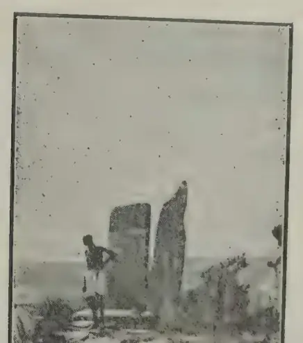
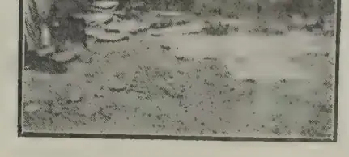

Porumamilla Tank Inscription of Bhaskara Bhavadura : Saka 1291
Reading this page
p. 23 is the page number printed in the volume; PDF 391 is that page's place in the scanned PDF, the page to open in the source scan. The badge at the bottom right shows the page you are reading as you scroll: click it to show printed or PDF numbers, or both, and to jump to a page. ↑ Top takes you back to the start.
Footnotes are numbered through the article and gathered at its end: click a number in the text to read its note in place, and ↩ in the notes to come back. Plates stand where the volume binds them, at the end of the paragraph they interrupt; All plates shows them together.
THE PORUMAMILLA TANK INSCRIPTION OF BHASKARA BHAVADURA
SAKA 1291.
BY DR. V. S. SUKTHANKAR, PH.D. ; POONA.


The position of the inscribed stones on the tank-bund.
Inked estampages of the subjoined inscription, which commemorates the construction of a tank, were prepared by the Madras Epigraphical Department in 1903, and it forms No. 91 of the Epigraphist's collection for the year 1902-3. It was briefly reviewed in the Annual Report on Epigraphy for 1903, and it has also received a short notice in an article by the late Mr. Venkayya entitled: Irrigation in Southern India in ancient times.1 The record is incised on two slabs, one smaller than the other, set up in front of the ruined Bhairava temple at Porumāmilla in the Badvēl Tāluk of the Cuddapah District, situated in 15° 1' N. and 79° E. The latter district being very dry, cultivation is in general only possible with the help of artificial storing of water. The irrigation tank at Porumāmilla is, according to the District Manual, one of the largest in the Tāluk. The inscription, apart from its historical importance, presents various other points of interest, not the least important of which is the light it sheds on the tank-building activity in ancient India.
As regards orthography, the inscription follows the same system which is to be observed in other inscriptions from the Telugu and Kanarese Districts. A superfluous anusvāra is inserted (1) before a nasal + consonant, as in puñnya ll. 13, 46; also in ll. 19, 36, 89: (2) before h + consonant, as in Vijayāmhvayam ll. 34, 35; also in ll. 57, 65: (3) before nn as in vijayōmnnatāh l. 36: (4) before rm as in kamrma° l. 82. We find also the doubling of a consonant after an anusvāra in chamchcha° l. 18. As in other inscriptions, we notice the mixing up of the two forms of visarga-sandhi, as in °tahssaumya in l. 23; also in ll. 29, 83, etc.; and the writing of thth for tth in °rththana° l. 100, and of jhjh for jjh in °pāyōjhjitam l. 12. Other examples of